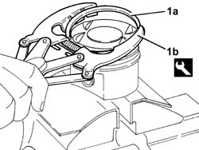
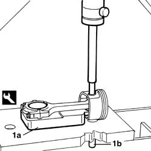
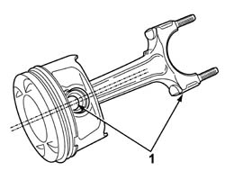
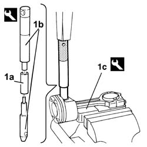
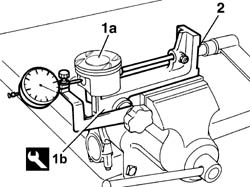

1028H54 PISTON/CYLINDER LINER - R R
- Path
- Procedures > 10 ENGINE > 1028 PISTONS AND CONNECTING RODS > 1028H PISTONS AND CONNECTING RODS > 1028H54 PISTON/CYLINDER LINER - R R
- Kind
- repair procedure (removal / refitting; the operation number is the code)
- Applies to
- engines: 3.0 24V V6; all production periods
- Interactive page
- https://sloeber94.github.io/elrnDB-fUlss/en/#/179006924
Applies to: engines: 3.0 24V V6; all production periods
Dismantling
- Remove the circlips.
1. Remove the seals (1a) from the piston using the tool (1b).
Description | Code | Function | |
|---|---|---|---|
Extractor/Fitting tool | 1.860.183.000 | Removing/refitting piston circlips |

Applies to: engines: 3.0 24V V6; all production periods
1. Position the connecting rod-piston assembly on the tool (1a) then, using a hydraulic press and a suitable drift, extract the gudgeon pin (1b) from the piston.
Description | Code | Function | |
|---|---|---|---|
Support | 1.860.986.000 | Connecting rod-piston assembly support |

Applies to: engines: 3.0 24V V6; all production periods
Reassembly
- Heat the connecting rods in an oven to a temperature of around 240 °C to allow the fitting of the gudgeon pin.
1. Join the connecting rods to the pistons so that the gudgeon pin offset is facing the number stamped on the big end.

Applies to: engines: 3.0 24V V6; all production periods
1. Fit the gudgeon pin (1a) using the fitting tool (1b) working in the vice with the connecting rod supported by the tool (1c).
Description | Code | Function | |
|---|---|---|---|
Fitting tool | 1.860.183.000 | Fitting gudgeon pin |
Description | Code | Function | |
|---|---|---|---|
Support | 1.860.986.000 | Connecting rod-piston assembly support |

Applies to: engines: 3.0 24V V6; all production periods
1. Check the fitting of the gudgeon pin by securing the connecting rod-piston assembly (1a) in the support tool (1b) and positioning a dial gauge to measure the movement of the pin.
2. Adjust the tool nut using a torque wrench set at a torque of 1.27 daNm equal to an axial load of 392.4 daN. The matching is correct if, when the action of the torque wrench is over and the nut is returned to its original simple contact position, the dial gauge pointer returns to zero. if this is not the case, replace the connecting rod.
Description | Code | Function | |
|---|---|---|---|
Support | 1.895.615.000 | Connecting rod-piston assembly support |

Applies to: engines: 3.0 24V V6; all production periods
- Fit the piston rings on the piston using the special tool.
Description | Code | Function | |
|---|---|---|---|
Extractor/Fitting tool | 1.860.183.000 | Removing/refitting piston circlips |
Topics that link to this page (3)
- 1004E20 ENGINE - DISMANTLE AND REASSEMBLE FOLLOWING OPERATION 1004E10 - WASH AND CHECK DISMANTLED PARTS - REFIT CYLINDER HEAD AND OIL SUMP - DOES NOT INCLUDE REPAIRS TO CYLINDER HEAD AND AUXILIARY UNIT
- 1024A10 CRANK SHAFT - R + R WITH ENGINE REMOVED - CHECK MAIN AND CONNECTING ROD BEARINGAND REPLACE IF NECESSARY
- 1028H60 PISTON, PIN SET - REPLACE